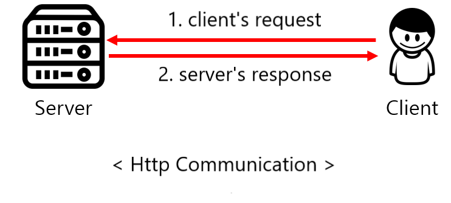
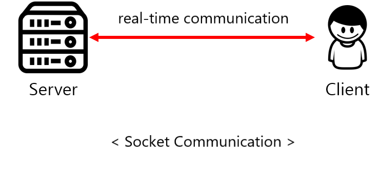

一般的に、デバイスで必要とされるデータはサーバーで管理します。 ネットワークを通じてサーバからデータを取得するための通信方式には、大きく分けてHttp通信とSocket通信の2種類がありますが、今日はこの2つの通信方式の違いについて見ていきたいと思います。
Http 通信
クライアントのリクエストがある場合のみ、サーバーが応答(Response)して当該情報を送信し、すぐに接続を終了する方式
Http通信はClientの要請があるときだけServerが応答して処理をした後に連結を絶つ方法です。 このような接続方法はClientが要請を送る場合にのみServerが応答するワン・ウェイ・コニュニケーションで、ServerがClientで要請を送ることはできません。 理解を助けるために皆さんがこのブログの内容を見るためにブログに入ってくる状況を例に挙げてみます。 皆さんがこのブログのためのリンクをクリックした瞬間にClient(ウェブ)はServer(ウェブサーバ)にこの文に対する内容を送ってほしいと要請をしたのです。 この文に対する内容を受けた後は、連結が終了されます。 そのために要請を送るとき、内容を待つ時間と共に連結する時間が入るようになります。 このようなHttp通信は、リアルタイム接続がなく、必要な場合のみServerにアクセスするコンテンツ中心のデータを使用するとき用意です。 もしブログに対する内容を要請するため、リアルタイムでつなぐを維持するSocket通信を使用することになると、ブログの内容を受けた後も、引き続き通信のための連結が成立しており、負荷がかかります。 一般的にモバイルアプリケーションは必要な場合のみServerで情報を要請する場合が多いが、このようなWeb ServerでHttp通信を主に使用して費用や保守などほとんどの方面でいいです。

Http 通信の特徴
- クライアントがリクエストを送信した場合にのみ、サーバーが応答するワン・ウェイ・コニュニケーションである。
- サーバーからの応答を受けた後は、接続がすぐに終了する。
- リアルタイムの接続ではなく、必要な場合にのみサーバーに要請を送る状況に有用である。
- 要請を送ってサーバーの応答を待つアプリケーション(Android or Ios)の開発に主に使われる。
Socket 通信
サーバーとクライアントが特定ポートを通じてリアルタイムでツーウエー・コミュニケーションする方式
Socket通信はHttp通信とは違って、ServerとClientが特定Portを通じて連結を成立しており、リアルタイムでツーウエー・コミュニケーションする方式です。 Clientのみ必要な場合に要請を送るHttp通信とは違って、Socket通信はServerもClientで要請を送ることができ、ずっとつながりを維持する連結志向型通信であるため、リアルタイムの通信が必要な場合によく使用されます。 例えば、リアルタイムStreamingの中継やリアルタイムでチャットと一緒に即座に情報をやり取りする場合に使用します。 例えば、リアルタイム動画StreamingサービスをHttp通信で具現したと仮定します。 このような場合に使用者がサーバに動画を要請するためには動画が終了される瞬間まで継続してHttp通信を送らなければならない、このような構造は引き続き連結を要請するために負荷がかかります。 従って、このような場合にはSocketを通じて具現することが適しています。

Socket 通信の特徴
-ServerとClientがずっとつながりを維持するツーウエー・コミュニケーションである。
-ServerとClientがリアルタイムでデータをやり取りする状況が必要な場合に使用される。
-リアルタイム動画Streamingやオンラインゲームなどのような場合によく使用される。